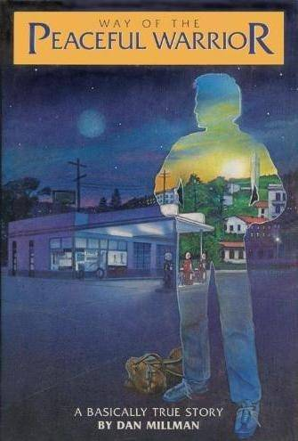

Way of the Peaceful Warrior
Posted on 10/09/2018
Interestingly enough, this is my first ever blog post and what is better than sharing one of the best books I’ve ever read as a first blog post? There could be a plenty of other topics but oh well. I just want everyone to have a quick glimpse on this book at least.
“Warriors, warriors we call ourselves. We fight for splendid virtue, for high endeavour, for sublime wisdom, therefore we call ourselves warriors” – Aunguttara Nikaya.
As the book itself; it contains three main chapters and three sub chapters for each. The book is 210 pages long and doesn't contain any images which leaves to your own imagination. And Dan Millman has done a great job of making the reader re-live the situation/moment even if it's imaginary, sorcery or real.
Though as soon as i started reading, i couldn't get myself off of it. I have experienced this kind of feeling couple of times and it was only the times at the release of a new Battlefield game and i just couldn't help but play the shit out of it for a good period of time. Thus, i give props to Dan Millman and thank John Sonmez for recommending.
So, let's get straight to the point, as the book's title suggests "A Book That Changes Lives", it certainly made me realise some aspects in life and expanded my perspective on situations, failures and problems i face/d and take good lessons from it. As a whole, i really became more relaxed and a calmer person who really learned listen to understand rather than to respond. I, again, remembered the truths and lessons that i had to apply in life and mould in the character that i wanted to be, 'A Warrior'.
To conclude, Dan Millman's approach is somewhat in a fictional sense but not so fictional if you get what i mean. He puts you through many feelings which define the whole purpose; to free the mind and being in the moment. This allows you to express all kinds of emotions you currently possess and just let it out, hence you come to the realisation that it's never worth it to keep it within yourself. This is how you let go of the weight you've been carrying on your shoulders all this time and learn to be yourself but more importantly 'Being a Warrior', and a 'A Peaceful Warrior'.
Consequently, I recommend this book heavily for everyone and insist for the ones who really want to develop themselves. I bought a second hand copy for £3 which was in a some-what good condition from worldofbooks08 supplier on eBay.